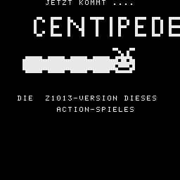

C E N T I P E D E IST EIN
GIFTIGER WURM AUS SEGMENTEN.
ER VERSUCHT, SICH ANZUSCHLEI-
CHEN UND DICH ZU FRESSEN.
DU KANNST DICH MIT EINEM GEWEHR
VERTEIDIGEN.
JE NACH DEM, WIE BEDROHT SICH
DER WURM FUEHLT, BRINGT ER
SEINE GIFTIGEN KUMPELS MIT
ODER SPUCKT VON WEITEM GIFT *.
DU DARFST DICH NICHT BEISSEN
ODER VON GIFT TREFFEN
LASSEN. DAZU MUSST DU ALLE
SEGMENTE ABSCHIESSEN, BEVOR DU
ERREICHT WIRST.
SCHIESS ABER EXAKT, DENN WENN
DU DEN WURM IN DER MITTE
TRIFFST, ZERFAELLT ER IN ZWEI
BISSIGE TEILE.
BEWEG DICH MIT &>lt;-- UND --&>gt; !
SCHIESS MIT DER LEERTASTE !
DAMIT ES INTERESSANTER WIRD,
KANNST DU MEHRERE LEBEN HABEN.
V I E L S P A S S ! !
PUNKTE WERDEN IN EINER LISTE
MIT DEINEM NAMEN GEMERKT.